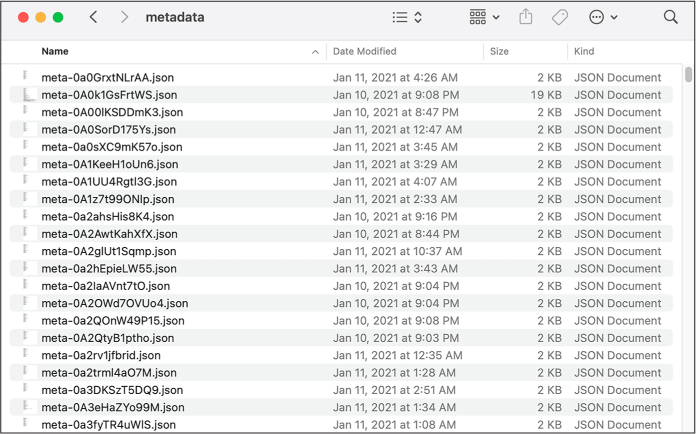
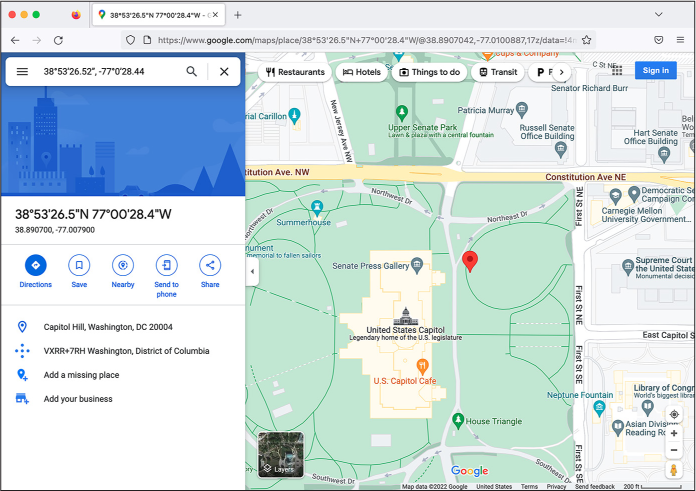
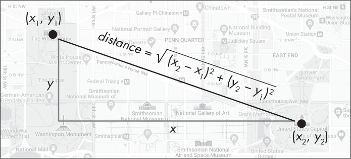
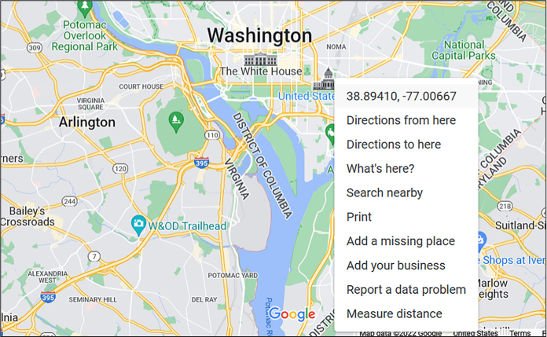
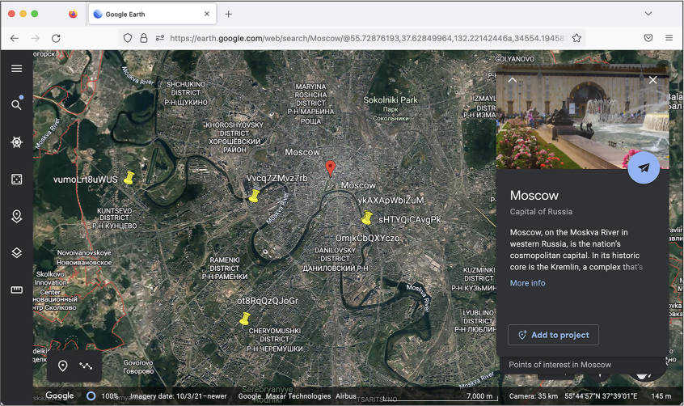

Smartphones in hand, the pro-Trump, anti-democracy activists recorded the entire event. They posted their photos and videos online, many to the far-right social media site Parler. In this chapter, you’ll learn to work with the massive trove of video evidence collected from that day’s insurrection in a popular file format called JavaScript Object Notation (JSON). You’ll learn how JSON data is structured and write Python code to scour a million JSON files full of Parler video metadata to find specific videos. You’ll also learn about working with Global Positioning System (GPS) coordinates, including how to plot points on a map, since many of the videos include GPS coordinates in their metadata. All of these skills could serve you well in your future investigations.
Let’s start with a brief history of how the Parler dataset became available to the public.
The Origins of the Parler Dataset¶
The protesters at the US Capitol insurrection filmed themselves marching with Don’t Tread on Me, Fuck Biden, and Trump flags; tearing down fences; fighting with riot cops; smoking weed; smashing windows and then storming the Capitol building through them; throwing chairs at police; and threatening the lives of members of Congress and Vice President Mike Pence. They uploaded these videos to Parler in real time as they filmed them.
During the attack on the Capitol, pro-Trump rioters attacked police officers with baseball bats, flag poles, and pipes, injuring at least 138 of them. One officer, Brian Sicknick, was hospitalized and died the next day. In the weeks and months following the attack, four more officers who responded that day died by suicide. A Capitol Police officer shot and killed Ashli Babbitt, a rioter who attempted to breach the doors to the US Senate chamber where senators were sheltering. Three more Trump supporters died during the riot: one from being crushed to death in the crowd, one from a stroke, and one from a heart attack.
Days after the attack, citing Parler’s unwillingness to moderate content that encourages and incites violence, Apple and Google banned the Parler app from their app stores. Amazon Web Services (AWS), the major cloud hosting service that Parler had relied on, kicked the company off its service. It took Parler a month and a half to bring its site back up. Before it went down, though, a quick-thinking archivist downloaded over a million videos from the site. In this section, I’ll describe how she downloaded the videos and how they were used in Trump’s second impeachment trial.
How the Parler Videos Were Archived¶
On the Saturday after the January 6 attack, John Paczkowski and Ryan Mac published an email in BuzzFeed News from the Amazon AWS Trust & Safety Team to Parler. Amazon informed Parler that it “cannot provide services to a customer that is unable to effectively identify and remove content that encourages or incites violence against others,” and that “we plan to suspend Parler’s account effective Sunday, January 10th.” Less than 48 hours before Parler went dark, a hacker named @donk_enby, with the help of other archivists, raced to download a copy of all of the videos and images uploaded to the social network.
Parler, it turns out, lacked security measures that prevent automatic scraping of the site’s data. Web scraping is a method of automated data collection where you use code to load web pages, rather than manually loading them in a browser, and extract their data. This chapter won’t cover how to scrape the web like @donk_enby did, but if you’re curious, you can learn how in Appendix B.
Parler’s website didn’t have any rate limiting, a security feature that prevents users from accessing the site too frequently, so nothing stopped a single computer from making millions of web requests. The URLs of Parler posts appeared to have random IDs, but @donk_enby discovered that they also had hidden incremental IDs (1, 2, 3, and so on), so a script could easily loop through every ID, make a web request to download every post, and then find the URLs for every video and image to download. While Parler did strip metadata from videos uploaded by its users, they also left original copies of videos that contained this metadata at predictable URLs. @donk_enby downloaded versions of the videos that contained a wealth of hidden information, including, in many cases, the GPS coordinates of where the video was filmed.
When @donk_enby archived this data, she saved it to an AWS S3 bucket, an AWS service for hosting files that never runs out of disk space. (It’s ironic that, in response to AWS kicking Parler off its service, she saved copies of the videos to a different part of AWS.)
Because there’s no widely agreed-upon definition of hacking, whether or not Parler was “hacked” is a matter of perspective. Technically, @donk_enby scraped public content from a public website, which isn’t illegal and doesn’t require bypassing security—had Parler even had any that would have prevented this. The same thing is often true of illegal hacking, though; people break into systems that are barely protected or accidentally left open to the public.
By Sunday night, @donk_enby had managed to archive at least 32TB of videos. “I hope that it can be used to hold people accountable and to prevent more death,” she told Vice. She worked with DDoSecrets to make a copy of the data available to the public—the copy you’ll work with in this chapter.
The Dataset’s Impact on Trump’s Second Impeachment¶
On January 13, a week after the deadly riot at the Capitol and a week before Joe Biden’s inauguration as the new president, the US House of Representatives impeached Trump for “incitement of insurrection,” making Trump the first president in US history to be impeached twice.
During the impeachment trial in the US Senate, which took place in February at the beginning of Biden’s administration, the impeachment managers showed many videos of violent Trump supporters that @donk_enby had archived from Parler as evidence to support their case. “I had an efficient way to download it all. I knew what was there, but it seemed that nobody else could see the value,” she told CNN at the time. “I hope it inspires more people with similar skills to mine to use those skills for good.”
Ultimately, 57 percent of the Senate, including seven members of the Republican Party, found Trump guilty, while 43 percent—all of whom were Republicans—found him not guilty. The US Constitution requires a two-thirds majority of the Senate to convict, so Trump was acquitted. However, over 1,000 people were charged in connection to the January 6 insurrection. Two members of the far-right Oath Keepers militia, including its leader, Stewart Rhodes, and four members of the Proud Boys hate group, including its former leader, Enrique Tarrio, were convicted of seditious conspiracy. Several other members of these groups were also convicted of lesser crimes. Rhodes was sentenced to 18 years in prison in May 2023, and Tarrio was sentenced to 22 years in prison in September 2023.
Further investigating this dataset is obviously in the public interest. Let’s get started in Exercise 11-1.
Exercise 11-1: Download and Extract Parler Video Metadata¶
The Parler data is so large that it’s not practical, for the purposes of this chapter, to download it all. Instead, you’ll start with just the video metadata DDoSecrets has made available separately. The metadata contains useful information about each video, like its file format, when it was filmed, what type of phone or camera was used to film it, and in some cases the GPS coordinates describing where it was filmed. In this exercise, you’ll learn how to use the metadata to select and download individual videos to view.
NOTE If you’re using Windows, I recommend that you follow along with this chapter using your Ubuntu terminal instead of PowerShell and that you save this data in your WSL Linux filesystem (for example, in ~/datasets), instead of in your Windows-formatted USB disk (/mnt/c or /mnt/d). Because of disk performance issues with WSL, I found that working with this data in Linux rather than directly in Windows was significantly faster. If you’ve only used Python in Windows so far, install Python in Ubuntu with the command sudo apt install python3 python3-pip, then install the click Python module by running python3 -m pip install click. You’ll need the click module for the exercises in this chapter. Refer to Appendix A to learn more about solving performance issues in WSL if you run into any problems.
Download the Metadata¶
Since the Parler dataset takes up so much disk space, DDoSecrets couldn’t publish it using BitTorrent like it does with most of its other public releases. To seed that torrent, you would need a single server with 32TB of data, and no one would be able to connect to the swarm to download it because no one has 32TB of disk space lying around. Instead, DDoSecrets hosts the Parler data on its public data web server. If you know the filename of a Parler video, you can download it from https://data.ddosecrets.com/Parler/Videos/<filename>.
You can also download a full list of filenames, ddosecrets-parler-listing.txt.gz, and metadata for all of the video files, metadata.tar.gz. Files ending in .gz are compressed using a format called GZIP, so you can tell from the filename that ddosecrets-parler-listing.txt.gz is a compressed text file. Files ending in .tar, called tarballs, also combine multiple files and folders together into a single file. Tar files aren’t compressed, though—they take up as much disk space as all of the files they contain—so it’s common to compress them with GZIP, resulting in .tar.gz files. The metadata.tar.gz file is a GZIP-compressed tarball.
Start by downloading
ddosecrets-parler-listing.txt.gz and metadata.tar.gz using the
wget command. This command
is similar to curl, but it
downloads a file and saves it to disk by default instead of displaying
it in your terminal. Check if you already have wget installed by running
which wget. If you don’t,
install it on macOS with brew install wget, or on Linux or Windows with WSL with
sudo apt install wget.
Open a terminal. Create a new folder for the Parler data you’ll download, and change to that folder. (If you’re using Windows with WSL, make sure you create it in your WSL Linux filesystem, such as at \~/datasets/Parler.) For example, here’s how I did it on my Mac, creating the folder on my datasets USB disk:
micah@trapdoor ~ % cd /Volumes/datasets
micah@trapdoor datasets % mkdir Parler
micah@trapdoor datasets % cd Parler
micah@trapdoor Parler %
Now use wget to download the
list of filenames by running the following command:
micah@trapdoor Parler % wget https://data.ddosecrets.com/Parler/Videos/ddosecrets-parler
-listing.txt.gz
--snip--
Resolving data.ddosecrets.com (data.ddosecrets.com)... 172.67.75.15, 104.26.3.199, 104.26.2.199
Connecting to data.ddosecrets.com (data.ddosecrets.com)|172.67.75.15|:443... connected.
HTTP request sent, awaiting response... 200 OK
Length: 17790173 (17M) [application/octet-stream]
Saving to: 'ddosecrets-parler-listing.txt.gz'
ddosecrets-parler-listin 100%[==================================>] 16.97M 29.1MB/s in 0.6s
... (29.1 MB/s) - 'ddosecrets-parler-listing.txt.gz' saved [17790173/17790173]
The output should show that you’ve downloaded the 17MB ddosecrets
-parler-listing.txt.gz file. The wget program shows you a progress bar of
your download in your terminal.
Next, download the video metadata by running the following command:
wget https://data.ddosecrets.com/Parler/Videos/metadata.tar.gz
Check to make sure you’ve successfully downloaded the files by running
ls -lh. You should get the
following output:
-rw-r--r-- 1 micah staff 17M Mar 28 2021 ddosecrets-parler-listing.txt.gz
-rw-r--r-- 1 micah staff 203M Mar 15 2021 metadata.tar.gz
The file containing the list of filenames should be 17MB, and the metadata file should be 203MB.
Uncompress and Download Individual Parler Videos¶
To uncompress GZIP files, you’ll use the gunzip command with the following syntax:
gunzip filename.gz. Running gunzip on a gzipped file deletes the original
file and leaves you with the uncompressed version without the .gz file
extension.
Uncompress the ddosecrets-parler-listing.txt.gz file by running the following command:
gunzip ddosecrets-parler-listing.txt.gz
Your original 17MB file, ddosecrets-parler-listing.txt.gz, should be replaced with a 43MB text file called ddosecrets-parler-listing.txt, which contains over one million lines, one for each video that @donk_enby archived.
To make sure it worked, run ls -lh again. Your output should look
something like this:
-rw-r--r-- 1 user staff 43M Mar 28 2021 ddosecrets-parler-listing.txt
-rw-r--r-- 1 user staff 203M Mar 15 2021 metadata.tar.gz
Count the number of files in ddosecrets-parler-listing.txt with the following command:
cat ddosecrets-parler-listing.txt | wc -l
As you learned in Chapter 4, the
cat command displays the
content of a file, and piping that command’s output into wc -l counts the number of lines in that
file. The output should be 1031509, meaning there are 1,031,509 lines in
ddosecrets-parler-listing.txt.
If you load the file in a text editor, it should look like this:
2021-01-12 18:31:54 77632730 0002bz1GNsUP
2021-01-12 18:37:33 14586730 0003lx5cSwSB
2021-01-12 18:37:33 822706 0004D2lOBGpr
2021-01-12 18:37:33 17354739 000EyiYpWZqg
2021-01-12 18:37:33 2318606 000SbGUM7vD4
2021-01-12 18:37:33 5894269 000oDvV6Bcfd
2021-01-12 18:37:36 20806361 0012uTuxv9qQ
2021-01-12 18:37:34 45821231 0015NlY0yUB5
--snip--
The first and second columns of text show the date and time that @donk_enby first uploaded each file to the S3 bucket, just after scraping it. The third column is the size of the file, in bytes, and the final column is the filename. All of the video files in the Parler dataset have similar random-looking names. These are the original IDs that Parler used for each video, and they don’t have file extensions.
Now that you know the filenames of each Parler video, you can download individual files from https://data.ddosecrets.com/Parler/Videos/<filename>. Let’s try downloading one of the first videos listed in ddosecrets-parler-listing .txt. First, use the following commands to create a videos folder and switch to that folder:
micah@trapdoor Parler % mkdir videos
micah@trapdoor Parler % cd videos
Next, run the following command to download the Parler file 0003lx5cSwSB:
wget https://data.ddosecrets.com/Parler/Videos/0003lx5cSwSB
You can normally tell the format of a file based on its file extension,
but since these Parler video filenames don’t have extensions, use the
following file command to
determine the format of 0003lx5cSwSB:
file 0003lx5cSwSB
The output, 0003lx5cSwSB: ISO Media, MP4 v2 [ISO 14496-14], shows that the file is an MP4 video.
To make it easier to open in video-playing software, you’ll need to add
the .mp4 extension to the filename. You can rename files using the
command mv
source_path dest_path, which moves a file from a
source path to a destination path. To rename 0003lx5cSwSB to
0003lx5cSwSB.mp4, run the following command:
mv 0003lx5cSwSB 0003lx5cSwSB.mp4
You can now watch 0003lx5cSwSB.mp4 in software like VLC Media Player. Figure 11-1 shows a screenshot from this video, which features Trump battling the “fake news” media and calls him the “Savior of the Universe.”
Figure 11-1: A screenshot from a pro-Trump Parler video showing an altered image of Trump riding a motorcycle
In your terminal, run cd .. to change out of the videos folder
you just created and back to the Parler dataset folder.
There are over a million videos in this dataset, and most likely, only a small fraction contain anything newsworthy. If you randomly pick individual videos to download and watch, chances are you’ll be wasting a lot of time. To more efficiently find interesting videos, let’s take a closer look at the metadata.
Extract Parler Metadata¶
To view the Parler metadata, you’ll need to extract the
metadata.tar.gz tarball. In your terminal, uncompress and extract
metadata.tar.gz using the tar command:
tar -xvf metadata.tar.gz
Because it’s so common to gzip tar archives, the tar command will automatically detect if
it’s gzipped and uncompress it for you, so you don’t need to manually do
the gunzip step yourself. In
the -xvf argument,
x tells tar to extract the files from
metadata.tar, v (meaning
verbose) tells tar to
display each filename it extracts in the terminal, and f means that the next argument is a
filename for the tarball on which this command will run.
Your output should look like this:
x metadata/
x metadata/.aws/
x metadata/meta-00CnBY5xCdca.json
x metadata/meta-0003lx5cSwSB.json
x metadata/meta-0070HNolzi3z.json
x metadata/meta-00BIFOMnOyi1.json
x metadata/meta-0002bz1GNsUP.json
--snip--
The command might take 10 minutes or so to extract the over one million JSON files in metadata.tar.gz into a new folder called metadata, depending on the speed of your hard disk. (If you’re using Windows with WSL and this step is going very slowly, consult Appendix A for performance tips.)
Feel free to run ls on the
metadata folder or view it in a file browser, but beware that there
are so many files that those simple tasks will take a long time (it took
over five minutes for the ls
command to finish running on my computer). Figure
11-2 shows the files in the metadata folder
in Finder on macOS.
The files in this folder are all named meta-<ID>.json, where ID is the original video ID from Parler. For example, you can find the metadata for the file 0003lx5cSwSB, the video you downloaded in the previous section, at metadata/meta-0003lx5cSwSB.json. All of these metadata files are in the JSON file format, so let’s take a closer look at that now.

Figure 11-2: Some of the extracted Parler metadata files
The JSON File Format¶
JSON is a format used to store information in text strings. One of its
main benefits is that it’s human-readable. Some file formats are
designed for computers rather than humans to understand. If you run
cat on a PDF file, for
example, you’ll see random-looking output in your terminal. You need to
open the PDF in a program like Adobe Reader to understand the
information it contains. However, humans can easily read the JSON text
format just by viewing it in a text editor or by using the cat command.
JSON is one of the most widely used data formats, and the one most APIs communicate with. Whenever you visit a website that does anything interactive, chances are your web browser and the website’s server are passing JSON data back and forth. This is one reason why hacked data, as well as data scraped from APIs, is often full of JSON files. Most of the data from the America’s Frontline Doctors dataset, covered in detail in Chapter 13, is in JSON format, as is much of the data hacked from Gab, the right-wing social network discussed in Appendix B.
In this section, you’ll learn more about JSON syntax and how to load JSON data into Python scripts.
Understanding JSON Syntax¶
JSON has JavaScript in its name because it was first derived from that programming language, but it’s a language-independent data format: you can work with JSON data in JavaScript, Python, or any other programming language. Using their own JSON libraries, programming languages can convert JSON text strings into structured data (such as Python’s dictionaries and lists) and also convert that structured data back into JSON text strings that can be loaded by code in any other programming language.
To get an idea of the structure of a JSON file, run the following command in your terminal to display the metadata for the Parler video with the filename 0003lx5cSwSB:
cat metadata/meta-0003lx5cSwSB.json
The output should look like Listing 11-1.
[{
"SourceFile": "-",
"ExifToolVersion": 12.00,
"FileType": "MP4",
"FileTypeExtension": "mp4",
"MIMEType": "video/mp4",
"MajorBrand": "MP4 v2 [ISO 14496-14]",
"MinorVersion": "0.0.0",
"CompatibleBrands": ["mp42","mp41","iso4"],
"MovieHeaderVersion": 0,
"CreateDate": "2020:10:15 09:35:29",
"ModifyDate": "2020:10:15 09:35:29",
"TimeScale": 48000,
"Duration": "0:01:59",
--snip--
Listing 11-1: Video metadata for the file 0003lx5cSwSB
As you can see, FileType is
MP4. The
CreateDate is
2020:10:15 09:35:29, meaning
that this video was filmed on October 15, 2020, at 9:35 [AM],
and the Duration is
0:01:59, or 1 minute and 59
seconds.
JSON syntax is extremely similar to Python syntax but uses different terminology to describe types of information:
Object
A set of key-value pairs. An object is essentially equivalent to a
dictionary in Python and even uses the same syntax. In JSON, however,
keys must be strings. Objects are defined between braces ({and}), and keys and values are
separated with colons—for example,
{"first_name": "Frederick", "last_name": "Douglass"}. The JSON output for Listing
11-1 also includes a JSON object.
Array
An ordered list of items. An array is essentially equivalent to a list
in Python and uses the same syntax. Arrays are defined between brackets ([and ]), and items are
separated by commas. The JSON output in Listing 11-1 has a few arrays, such as
["mp42","mp41","iso4"].
Boolean
A value of either true or
false. These work the same
as True and False in Python, but they’re lowercase in
JSON.
Number
Any whole number or number with decimals in it, such as 2600 or 3.14. These are similar to numbers in
Python, though while Python makes a distinction between integers (whole
numbers) and floating points (numbers with decimals), JSON does not.
String
A sequence of text characters—for example,
"videos have metadata?".
This is exactly the same as a string in Python, except that JSON strings
must be enclosed double quotes ("), whereas Python also allows you to
use single quotes (').
null
A keyword representing an empty value. This is very similar to Python’s
None keyword.
All JSON data is made up of combinations of these types, so it’s
important to understand their exact syntax. If you use any invalid
syntax, such as surrounding a string with single quotes instead of
double quotes or using the Boolean True instead of true, the JSON data won’t load properly.
Unlike in Python code, whitespace isn’t important in JSON data. For example, consider this JSON string:
{"abolitionists":[{"first_name":"Frederick","last_name":"Douglass"},{"first_name":"John","last
_name":"Brown"},{"first_name":"Harriet","last_name":"Tubman"}]}
To write the same JSON string in a more human-readable format, you can split it into multiple lines and add indentation:
{
"abolitionists": [
{
"first_name": "Frederick",
"last_name": "Douglass"
},
{
"first_name": "John",
"last_name": "Brown"
},
{
"first_name": "Harriet",
"last_name": "Tubman"
}
]
}
You might encounter JSON files in datasets that are formatted either way. I often open JSON files in VS Code and use the text editor’s built-in format feature to reformat the JSON for legibility. To format a document in VS Code, click View ▸ Command Palette ▸ Format Document and press ENTER.
Parsing JSON with Python¶
You can turn JSON data into Python dictionaries and lists using Python’s
built-in json module. First,
open a Python interpreter and import the module:
>>> import json
The function in this module that I use the most is
json.loads(). This takes a
string with JSON data as an argument, parses the string into a Python
object like a dictionary or a list, and returns that object. For
example, define a string called json_data and set its value to a JSON string
with the following command:
>>> json_data = '{"first_name": "Frederick", "last_name": "Douglass"}'
The value you set json_data
to looks similar to a dictionary, but since it’s surrounded by single
quotes, it’s actually a string. In Python, the type() function tells you the type of a
variable. You can confirm that json_data is a string with the following
command:
>>> type(json_data)
<class 'str'>
This output shows that json_data is a class of type str (Chapter 14 will touch on classes), meaning it’s a string. Now define a variable called obj and set its value to the return value
of the json.loads()
function:
>>> obj = json.loads(json_data)
Here, json.loads() takes a
string as input and, if the string contains valid JSON, converts it into
structured data—in this case, storing the resulting object in
obj. Use the
type() function on
obj now to see what type of
variable it is:
>>> type(obj)
<class 'dict'>
The output shows that you’ve parsed this JSON data into a Python
dictionary (a dict), which
you can now use like any other dictionary. For
example, to put the value at the
last_name key of this
dictionary in an f-string and then display it, use the following
command:
>>> print(f"Hello, Mr. {obj['last_name']}.")
Hello, Mr. Douglass.
To practice accessing structured data, in your terminal, change to your Parler dataset folder, and then open a Python interpreter. Run the following commands to load the metadata from a Parler video as structured data. I’ve chosen the file metadata/meta-HS34fpbzqg2b.json, but feel free to load whichever file you’d like:
>>> import json
>>> with open("metadata/meta-HS34fpbzqg2b.json") as f:
... json_data = f.read()
...
>>> obj = json.loads(json_data)
You now have the video metadata in the variable obj. The simplest way to start inspecting
it is to display it to the screen with the print() function:
>>> print(obj)
[{'SourceFile': '-', 'ExifToolVersion': 12.0, 'FileType': 'MOV', 'FileTypeExtension': 'mov',
'MIMEType': 'video/quicktime', 'MajorBrand': 'Apple QuickTime (.MOV/QT)', 'MinorVersion':
'0.0.0', 'CompatibleBrands': ['qt '], 'MediaDataSize': 139501464, 'MediaDataOffset': 36,
--snip--
This output looks a little like JSON, but it’s a Python object—in this
case, a list with a nested dictionary. Use the len() function you learned about in
Chapter 8 to count how many items are in
this list:
>>> len(obj)
1
Since any given Parler video metadata file contains the metadata only
for one video, there’s only one item in this list. In order to access
that metadata, you need to select the first item in the list. To do
that, use obj[0] (remember,
0 is the first index for any list) as follows:
>>> print(obj[0])
{'SourceFile': '-', 'ExifToolVersion': 12.0, 'FileType': 'MOV', 'FileTypeExtension': 'mov',
'MIMEType': 'video/quicktime', 'MajorBrand': 'Apple QuickTime (.MOV/QT)', 'MinorVersion':
'0.0.0', 'CompatibleBrands': ['qt '], 'MediaDataSize': 139501464, 'MediaDataOffset': 36,
--snip--
This time, the output starts with a brace,
meaning the item is a dictionary. Now use a for loop to view all of the keys in this
dictionary:
>>> for key in obj[0]:
... print(key)
...
SourceFile
ExifToolVersion
FileType
--snip--
GPSLatitude
GPSLongitude
Rotation
GPSPosition
Each key listed in this output represents a different piece of video
metadata from the JSON file. You can also select values from this
dictionary using their keys. For example, try printing the values for
the GPSLatitude and
GPSLongitude keys:
>>> print(obj[0]["GPSLatitude"])
38 deg 53' 26.52" N
>>> print(obj[0]["GPSLongitude"])
77 deg 0' 28.44" W
These values represent the GPS coordinates for the location where this video was filmed.
Since JSON makes it easy to convert structured data into strings and back, when creating BlueLeaks Explorer I used JSON files to store the structure of BlueLeaks sites, as described in the section The Technology Behind BlueLeaks Explorer in Chapter 10. When you create a structure for a BlueLeaks site, BlueLeaks Explorer stores all of the configuration for that site in a dictionary, then saves that information to a JSON file. If you quit BlueLeaks Explorer and then run it again later, it loads that JSON file back into a dictionary. Since the Parler metadata comes in JSON format, you can also write Python code that loads these JSON files to easily access that metadata, as you’ll do later in this chapter.
To learn more about the json
module, you can find the documentation and plenty of example code at
https://docs.python.org/3/library/json.html.
Handling Exceptions with JSON¶
The json.loads() function
will throw an exception if you pass an invalid JSON string into it, like
this:
>>> json.loads("this isn't valid json")
Traceback (most recent call last):
File "<stdin>", line 1, in <module>
File "/Library/Frameworks/Python.framework/Versions/3.10/lib/python3.10/json/__init__.py",
line 346, in loads
return _default_decoder.decode(s)
File "/Library/Frameworks/Python.framework/Versions/3.10/lib/python3.10/json/decoder.py",
line 337, in decode
obj, end = self.raw_decode(s, idx=_w(s, 0).end())
File "/Library/Frameworks/Python.framework/Versions/3.10/lib/python3.10/json/decoder.py",
line 355, in raw_decode
raise JSONDecodeError("Expecting value", s, err.value) from None
json.decoder.JSONDecodeError: Expecting value: line 1 column 1 (char 0)
A json.decoder.JSONDecodeError exception means that the string you
passed in doesn’t contain valid JSON data. In this case, it’s telling
you the error in the JSON string is at line 1, column 1, and character
0, meaning the error is located at the first character of the string. If
you have a longer JSON string that’s mostly valid but just has a little
syntax issue, this error message can help you determine which piece of
your syntax is wrong.
Validating JSON data is a common use for Python exception handling,
which you learned about in Exception Handling in Chapter 7. For example, let’s say you have a string
called json_data. The
following code will catch exceptions in case this string contains
invalid JSON data:
try:
obj = json.loads(json_data)
print("The JSON is valid")
print(obj)
except json.decoder.JSONDecodeError:
print("Invalid JSON")
This code uses try and
except statements to catch
the json.decoder.JSONDecodeError exception if it gets thrown. If
json_data is a valid JSON
string, it will display The JSON is valid, followed by the information in
obj. If the JSON string is
invalid, the script will display Invalid JSON and then continue running without
crashing.
To load a JSON file in Python functions such as main(), you must first load the content of
the file into a string like so
with open("filename.json") as f:
json_data = f.read()
replacing filename.json with whatever file you’re
loading, such as metadata/meta-HS34fpbzqg2b.json to load the metadata for the
HS34fpbzqg2b video file. As you learned in Reading and Writing
Files in Chapter 8, this code opens the file as a
file object f and then
stores its content into a string called json_data.
Next, you’d run that string through json.loads() to convert it from a string into
structured data, like this:
try:
obj = json.loads(json_data)
except json.decoder.JSONDecodeError:
print("Invalid JSON")
return
When this code finishes running, if the JSON
string was valid, obj will
contain the JSON data. Otherwise, it will display Invalid JSON and then return early from the
function. The remaining code in the function can access the data in
obj.
To prepare for using this module to write Python scripts that parse the Parler metadata files, next we’ll look at how to access values like GPS coordinates from JSON files with several command line programs.
Tools for Exploring JSON Data¶
While we’ve been focusing primarily on working with JSON files using
Python, sometimes writing a Python script is overkill if you just want
to quickly search a large block of JSON text. In this section, you’ll
learn to use our old friend grep, as well as a more powerful tool
called jq, to search JSON
files.
Counting Videos with GPS Coordinates Using grep¶
As you know from Chapter 4, the command line
programs grep and
wc are incredibly powerful
tools to quickly assess datasets. In a single command, and without
needing to write a Python script, you can use grep to efficiently search inside JSON
files.
For example, let’s say you want to figure out how many Parler video
metadata files include GPS coordinates. Open a terminal, switch to your
Parler dataset folder, and run the following command to grep for the
string GPSCoordinates:
micah@trapdoor Parler % grep -r GPSCoordinates metadata
The first argument, -r
(short for --recursive),
tells grep to look inside
every file in the given folder. The next argument,
GPSCoordinates, is the
string to search for. The final argument, metadata, is the name of the folder to search.
When you run this command, your terminal should quickly fill with GPS coordinates:
metadata/meta-31VC1ufihFpa.json: "GPSCoordinates": "22 deg 8' 0.60\" S, 51 deg 22' 4.80\" W",
metadata/meta-ImUNiSXcoGKh.json: "GPSCoordinates": "0 deg 0" 0.00\" N, 0 deg 0' 0.00\" E",
metadata/meta-70Tv9tAQUKyL.json: "GPSCoordinates": "36 deg 10' 49.08\" N, 115 deg 26' 45.60\"
W, 1922.566 m Above Sea Level",
metadata/meta-P2w4QOgv5n9U.json: "GPSCoordinates": "26 deg 14' 46.32\" N, 80 deg 5' 38.76\" W,
3.424 m Above Sea Level",
--snip--
However, you’re trying to find how many of these videos have GPS
coordinates, not necessarily what those coordinates are. If coordinates
are still loading in your terminal, press CTRL-C to cancel the
command, then pipe the output of
grep into wc -l to count how many lines get displayed:
micah@trapdoor Parler % grep -r GPSCoordinates metadata | wc -l
64088
Of the slightly more than one million videos, about 64,000 have GPS coordinates.
Programs like grep and
wc can only take you so far
in your attempts to efficiently search large quantities of data. For
example, if the JSON files you’re searching are formatted on a single
line, rather than split into multiple lines like the Parler files,
grep will search the entire
block of JSON data for your string rather than a line at a time. You
can’t use grep to extract
specific fields of data from JSON, either. For that, the best tool for
the job is a program called jq.
Formatting and Searching Data with the jq Command¶
The jq program allows you to
take JSON data as input and select key information from it. In this
section, you’ll learn how to use it to extract specific information from
the Parler files.
First, you’ll need to install jq. Mac users can do so by running the
brew install jq command.
Linux or Windows with WSL users, run the sudo apt install jq command.
You can use the jq command
to indent JSON data and show syntax highlighting in your terminal,
making the data easier to read. For example, try running this command in
your terminal:
cat metadata/meta-HS34fpbzqg2b.json | jq
The first part of the command,
cat metadata/meta-HS34fpbzqg2b.json, outputs the content of that JSON
file, which contains the metadata for a single Parler video. The second
part, | jq, pipes that
output as input into jq.
The output should look like this:
[
{
"SourceFile": "-",
"ExifToolVersion": 12,
"FileType": "MOV",
"FileTypeExtension": "mov",
"MIMEType": "video/quicktime",
"MajorBrand": "Apple QuickTime (.MOV/QT)",
"MinorVersion": "0.0.0",
"CompatibleBrands": [
"qt "
],
--snip--
"GPSLatitude": "38 deg 53' 26.52\" N",
"GPSLongitude": "77 deg 0' 28.44\" W",
"Rotation": 180,
"GPSPosition": "38 deg 53' 26.52\" N, 77 deg 0' 28.44\" W"
}
]
This version includes syntax highlighting (as in VS Code) and formats the JSON data so that the items in every array and object are listed on separate lines and indented.
You can also use jq to
filter for details from inside the JSON data. For example, suppose you
just want to know the GPS coordinates from this JSON file. In the
preceding code, you can tell from the bracket character at the beginning
that this JSON data is an array. The first value of the array is an
object, since it starts with a brace character, and one of the keys of
the object is GPSPosition.
To filter for GPSPosition,
pass ".[0].GPSPosition" as
an argument into the jq
command, as follows:
micah@trapdoor Parler % cat metadata/meta-HS34fpbzqg2b.json | jq ".[0].GPSPosition"
"38 deg 53' 26.52\" N, 77 deg 0' 28.44\" W"
In this command, .[0]
selects the first item of the list in the file named
metaHS34fpbzqg2b.json, and .GPSPosition selects the value with the key
GPSPosition from the object.
The output shows the value of the GPSPosition field,
"38 deg 53' 26.52\" N, 77 deg 0' 28.44\" W".
If you’re interested in learning more about how to use jq, check out its website at
https://stedolan.github.io/jq.
You’ll also revisit it in Chapter 14, where
I explain how I used it to understand the structure of leaked neo-Nazi
chat logs.
Now that you have a foundational understanding of JSON, you’ll try your hand at writing Python code that works with it in Exercise 11-2.
Exercise 11-2: Write a Script to Filter for Videos with GPS from January 6, 2021¶
In this exercise, you’ll write a Python script that filters the Parler videos down to just those filmed on January 6, 2021, whose metadata includes GPS coordinates. You’ll do this by looping through all the JSON files in the dataset, converting them into Python objects, and inspecting their metadata to show you just the ones you’re looking for.
For a challenge, you can try programming your own script to meet the following requirements:
- Make this script accept an argument,
parler_metadata_path, using Click. This will be the path to the metadata folder full of JSON files. - Define a new variable called
countthat keeps track of the number of Parler videos that include GPS coordinates in their metadata, and set it to0. - Loop through all of the JSON files in the metadata folder. For
each loop, your program should run the content of each JSON file
through the
json.loads()function to turn it into a Python object. As described in the “[Parsing JSON with Python”] section, each object is technically a list containing one element, a dictionary full of all of the video’s metadata. - Check to see if that video’s metadata dictionary includes the key
GPSCoordinatesand if the date stored in the keyCreateDateis January 6, 2021. If both of these are true, the script should display a message that this file includes GPS coordinates and is from January 6, 2021, and increment thecountvariable by 1. - Have the program display a message after looping through all the
metadata files that tells the user the total number of videos with
GPS coordinates from January 6, 2021 (which should be stored in the
countvariable, now that you’re done counting).
Alternatively, follow along with the rest of this exercise and I’ll walk you through the programming process.
Accept the Parler Metadata Path as an Argument¶
Start with the usual Python script template:
def main():
pass
if __name__ == "__main__":
main()
Next, make the following modifications to your script so that it accepts
the parler_metadata_path CLI
argument. This way, when you run the script, you can pass in the path to
the metadata folder as an argument, which the code will use to open
all of the JSON files inside that folder. The modifications are shown in
bold:
import click
@click.command()
@click.argument("parler_metadata_path")
def main(parler_metadata_path):
"""Filter Parler videos with GPS that were filmed Jan 6, 2021"""
print(f"Parler metadata path: {parler_metadata_path}")
if __name__ == "__main__":
main()
This code first imports the click module, then uses it to make the
main() function accept the
argument parler_metadata_path. It also adds a docstring to show what
the script does when you run it with the --help argument. Finally, the
print() function will print
the value of parler_metadata_path to the screen.
Test your code to make sure it works so far, replacing the argument with the path to your own metadata folder:
micah@trapdoor chapter-11 % python3 exercise-11-2.py /Volumes/datasets/Parler/metadata
Parler metadata path: /Volumes/datasets/Parler/metadata
Sure enough, the code should display the same string, stored in
parler_metadata_path, that
you passed in as an argument.
Loop Through Parler Metadata Files¶
Next, add some code that will loop through all of the JSON files in the
metadata folder and run json.loads() on their contents to convert them into
structured data in Python. Modify your code as follows:
import click
import os
import json
@click.command()
@click.argument("parler_metadata_path")
def main(parler_metadata_path):
"""Filter Parler videos with GPS that were filmed Jan 6, 2021"""
for filename in os.listdir(parler_metadata_path):
abs_filename = os.path.join(parler_metadata_path, filename)
if os.path.isfile(abs_filename) and abs_filename.endswith(".json"):
with open(abs_filename) as f:
json_data = f.read()
try:
metadata = json.loads(json_data)
print(f"Successfully loaded JSON: {filename}")
except json.decoder.JSONDecodeError:
print(f"Invalid JSON: {filename}")
continue
if __name__ == "__main__":
main()
The code imports the os and
json modules at the top of
the file so it can use the functions they contain later on. The program
then loops through the return value of the os.listdir() function, which returns the list of
files in the metadata folder, storing each filename in the variable
filename.
Inside the for loop, the
code defines a new variable called abs_filename to be the absolute path of the JSON
file the code is working with each time it loops. It creates the
absolute path by concatenating parler_metadata_path with filename using the os.path.join() function. Now that the code knows the
full filename, it checks to make sure that this is actually a file, not
a folder, and that it ends with .json.
If the code confirms the file is JSON, it loads
all of the data from this file into the variable json_data and then converts that string into
structured data, saved in the variable metadata, using try and except statements, as described in the
Handling Exceptions with JSON section. If there are no syntax
errors in an individual JSON file, the code displays a message to the
screen saying that the file loaded successfully. Otherwise, it displays
an error and moves on to the next file using the continue statement. In a for loop, continue statements immediately end the current
loop and move on to the next loop.
To summarize, at this point the code is looping through every file in
the metadata folder, and for each JSON file it comes across, opening
it and loading its content as a text string. It then converts this
string into a Python object using the json.loads() function, storing the object in the
metadata variable, and
displays a message that it successfully loaded. If the file didn’t
successfully load, the message says that the JSON was invalid, and the
code continues on to the next JSON file.
Run the program again, replacing the argument with the path to your own metadata folder:
micah@trapdoor chapter-11 % python3 exercise-11-2.py /Volumes/datasets/Parler/metadata
Successfully loaded JSON: meta-gzK2iNatgLLr.json
Successfully loaded JSON: meta-31VC1ufihFpa.json
Successfully loaded JSON: meta-ZsZRse5JGx8j.json
--snip--
If your output shows many messages saying different JSON files loaded successfully, your code is working. Once you’ve determined that your output looks correct, you can press CTRL-C to cancel the script before it finishes running.
Filter for Videos with GPS Coordinates¶
Your code currently loops through all of the Parler metadata files, loads each file, and converts it into a Python object so you can work with it. Next, you need to filter out the videos that include GPS coordinates and to count those videos. To do so, make the following modifications:
import click
import os
import json
@click.command()
@click.argument("parler_metadata_path")
def main(parler_metadata_path):
"""Filter Parler videos with GPS that were filmed Jan 6, 2021"""
count = 0
for filename in os.listdir(parler_metadata_path):
abs_filename = os.path.join(parler_metadata_path, filename)
if os.path.isfile(abs_filename) and abs_filename.endswith(".json"):
with open(abs_filename) as f:
json_data = f.read()
try:
metadata = json.loads(json_data)
except json.decoder.JSONDecodeError:
print(f"Invalid JSON: {filename}")
continue
if "GPSCoordinates" in metadata[0]:
print(f"Found GPS coordinates: {filename}")
count += 1
print(f"Total videos with GPS coordinates: {count:,}")
if __name__ == "__main__":
main()
This code defines a new variable called count and starts its value out as
0. This will keep track of
the number of videos with GPS coordinates. After each JSON file is
loaded into the metadata
variable, an if statement
checks if the key GPSCoordinates exists inside this metadata
dictionary. Remember from the previous section that metadata is a list with one item, making
metadata[0] the actual
dictionary your code is checking. If this video metadata does have the
GPSCoordinates field, the
control flow moves to the code block after the if statement. Otherwise, it moves on to
the next loop.
When the Python script comes across metadata that includes GPS
coordinates, it displays the name of the file with print() and increments count by 1. This way, by the time this
for loop is finished,
count will contain the total
number of videos that have GPS coordinates in their metadata. Finally,
after the for loop
completes, the code displays that total count with a second call to the
print() function. As you
learned in Chapter 8, the :, in the f-string will display larger
numbers with comma separators.
Run your program again:
micah@trapdoor chapter-11 % python3 exercise-11-2.py /Volumes/datasets/Parler/metadata
Found GPS coordinates: meta-31VC1ufihFpa.json
Found GPS coordinates: meta-ImUNiSXcoGKh.json
Found GPS coordinates: meta-70Tv9tAQUKyL.json
--snip--
Found GPS coordinates: meta-1FMyKoVq53TV.json
Found GPS coordinates: meta-Y0jO2wy1Z7RO.json
Found GPS coordinates: meta-aZlkDfPojhxW.json
Total videos with GPS coordinates: 63,983
Because this script loads the JSON data from over a million files, it might take a few minutes to finish running. In the end, your script should find 63,983 videos with GPS coordinates. There should also be 63,984 lines of output: one with the name of each metadata file that has GPS coordinates, and one at the end that lists the total.
Filter for Videos from January 6, 2021¶
Now you’ll whittle down that list of roughly 64,000 videos even further to find out which were filmed on January 6, 2021.
You can tell the date on which a video was filmed from the
CreateDate field in its
metadata, as shown earlier in Listing 11-1.
The value of this field looks something like this:
"CreateDate": "2020:12:28 17:25:47",
To use the CreateDate field
to filter the results further, make the following modifications to your
code:
import click
import os
import json
@click.command()
@click.argument("parler_metadata_path")
def main(parler_metadata_path):
"""Filter Parler videos with GPS that were filmed Jan 6, 2021"""
count = 0
for filename in os.listdir(parler_metadata_path):
abs_filename = os.path.join(parler_metadata_path, filename)
if os.path.isfile(abs_filename) and abs_filename.endswith(".json"):
with open(abs_filename, "rb") as f:
json_data = f.read()
try:
metadata = json.loads(json_data)
except json.decoder.JSONDecodeError:
print(f"Invalid JSON: {filename}")
continue
if (
"GPSCoordinates" in metadata[0]
and "CreateDate" in metadata[0]
and metadata[0]["CreateDate"].startswith("2021:01:06")
):
print(f"GPS + Jan 6: {filename}")
count += 1
print(f"Total videos with GPS coordinates, filmed Jan 6: {count:,}")
if __name__ == "__main__":
main()
Rather than just checking for videos with GPS coordinates, now the code
also checks for those that have a CreateDate that starts with 2021:01:06. Once the code determines that the
metadata in the current loop has GPS coordinates and was created on
January 6, 2021, it displays the filename with
print(f"GPS + Jan 6: {filename}"). When the for loop is finished, it displays the
total count.
The expression in this code’s if statement is surrounded by
parentheses, and the three conditions inside those parentheses are
indented. This is purely cosmetic; the code would work exactly the same
if it were all on one line, but this formatting makes it slightly easier
to read.
You can find the final script in the book’s GitHub repo at https://github.com/micahflee/hacks-leaks-and-revelations/blob/main/chapter-11/exercise-11-2.py. Run the completed script like so:
micah@trapdoor chapter-11 % python3 exercise-11-2.py /Volumes/datasets/Parler/metadata
GPS + Jan 6: meta-xHkUeMHMFx3F.json
GPS + Jan 6: meta-eGqmDWzz0oSh.json
GPS + Jan 6: meta-WhQeLMyPWIrG.json
--snip--
GPS + Jan 6: meta-fhqU4rQ4ZFzO.json
GPS + Jan 6: meta-pTbZXLmXGyyn.json
GPS + Jan 6: meta-hL60MjItBhOW.json
Total videos with GPS coordinates, filmed Jan 6: 1,958
The script might still take a few minutes to run, but this time, there should be fewer results. Only 1,958 Parler videos have GPS coordinates and were filmed on January 6, 2021; this is about 3 percent of the videos with GPS coordinates, and less than 0.2 percent of all of the videos.
Watching almost 2,000 videos, while perhaps unpleasant, is at least feasible. We can still do better, though. In all likelihood, some of those January 6 videos weren’t actually filmed at the insurrection itself, but just happened to be uploaded the same day from other locations. To prepare for filtering this list further in order to find videos filmed at the insurrection, you’ll need some background on working with GPS coordinates.
Working with GPS Coordinates¶
In this section, you’ll learn how latitude and longitude coordinates
work and how to look them up on online map services like Google Maps.
You’ll also learn how to convert between different GPS formats and
measure the rough distance between two locations. I’ll introduce a few
new Python features, including the split() and replace() methods for modifying strings and the
float() function for
converting a string into a decimal number.
Searching by Latitude and Longitude¶
You can define any location on Earth using two coordinates: latitude and longitude. These coordinates are measured in degrees, with each degree split into 60 minutes and each minute split into 60 seconds. Latitude goes from 90 degrees North, which is the North Pole, to 0 degrees at the equator, to 90 degrees South, which is the South Pole. Longitude goes from 180 degrees West, which is in the middle of the Pacific Ocean, to 0 degrees, which cuts through England, to 180 degrees East, back to that same location in the middle of the Pacific.
For example, if you look up the metadata for the Parler video with filename HS34fpbzqg2b (which shows Trump supporters removing barricades around the Capitol building while police officers stand by and watch), you’d find the following GPS coordinates:
Latitude: 38 deg 53[′] 26.52[″] N
Longitude: 77 deg 0[′] 28.44[″] W
That means this video was filmed at the latitude of 38 degrees, 53 minutes, 26.52 seconds North and the longitude of 77 degrees, 0 minutes, 28.44 seconds West.
You can use various online map services, like Google Maps, to search by GPS coordinates and see exactly where on Earth they point to. To search the coordinates contained in the Parler metadata, you’ll need to slightly modify them so that Google Maps will recognize them, loading https://www.google.com/maps and entering these coordinates as the string 38°53′26.52″, −77°0′28.44. Try searching for those coordinates in Google Maps now. Figure 11-3 shows the exact location this video was filmed: just outside the US Capitol building, where police had set up barricades.

Figure 11-3: Pinpointing a location near the US Capitol building in Google Maps
You can also use Google Maps to discover the GPS coordinates of any given point. If you right-click anywhere on the map, a context menu should pop up showing you the GPS coordinates of that point. However, when you do this, the coordinates it shows you will look slightly different because they’ll be in decimal format.
In the next section, you’ll learn to convert from decimals to degrees, minutes, and seconds.
Converting Between GPS Coordinate Formats¶
GPS coordinates in decimal format show the number of degrees on the left side of the decimal point, and converted minutes and seconds values on the right side. For example, consider the GPS coordinates from the HS34fpbzqg2b video:
- The latitude is 38 degrees, 53 minutes, 26.52 seconds North, which is 38.8907 in decimal.
- The longitude is 77 degrees, 0 minutes, 28.44 seconds West, which is −77.0079 in decimal.
One degree is 60 minutes and one minute is 60 seconds, meaning there are 3,600 seconds in a degree. The formula to convert from degrees, minutes, and seconds to decimal format is degrees + (minutes / 60) + (seconds / 3,600). Latitudes are negative in the Southern Hemisphere but positive in the Northern Hemisphere, while longitudes are negative in the Western Hemisphere but positive in the Eastern Hemisphere. The latitude for the HS34fpbzqg2b video is positive, while the longitude is negative.
Decimal numbers are simpler to work with in code. Since the GPS
coordinates in the Parler metadata are formatted as degrees, minutes,
and seconds, let’s use some Python code to convert them to decimal
format. The gps_degrees_to_decimal() function in Listing
11-2 takes a GPS coordinate from the Parler
metadata as an argument and returns the decimal version.
def gps_degrees_to_decimal(gps_coordinate):
parts = gps_coordinate.split()
degrees = float(parts[0])
minutes = float(parts[2].replace(" ' ", " "))
seconds = float(parts[3].replace(' " ', " "))
hemisphere = parts[4]
gps_decimal = degrees + (minutes / 60) + (seconds / 3600)
if hemisphere == "W" or hemisphere == "S":
gps_decimal *= -1
return gps_decimal
Listing 11-2: The gps_degrees_to_decimal() function
This function introduces some new Python features. First, the
split() string method splits
a string into a list of parts based on whitespace. For example, this
method would convert the string '77 deg 0' 28.44" W' into the list of strings
['77', 'deg', "0' ", '28.44" ', 'W']. The line parts = gps _coordinate.split() stores the return value of
gps_coordinate.split() into
the parts variable. If you
passed that string into this function as gps_coordinate, this would mean the following:
parts[0]is the string77.parts[1]is the stringdeg.parts[2]is the string0'(0 followed by a single quote).parts[3]is the string28.44"(28.44 followed by a double quote).parts[4]is the stringW.
Before you can do math with strings in Python, you must convert them
into floating-point numbers—which are just numbers that can contain
decimals—using the float()
function. Listing 11-2 uses
float() to set the value of
degrees to the
floating-point version of parts[0]. In this case, it converts the value
of the string 77 in
gps_coordinate to the
floating-point number 77.0.
The next line of code similarly uses the replace() string method to convert the
minutes value to a
floating-point number. This method searches the string for the first
argument and replaces it with the second argument. For example,
"GPS is fun".replace("fun", "hard") returns the string
GPS is hard. When you run
parts[2].replace(" ' ", " "), you’re replacing the single quote
character (') with an empty
string, in order to delete that character. This would convert the string
0' from
gps_coordinate to
0 and then convert
0 to the floating-point
number 0.0.
The next line uses replace()
to delete the double quote character ("), converting the string
28.44" from
gps_coordinates to
28.44, then converting that
into the floating-point number 28.44 and saving it as seconds.
The rest of the function is more straightforward. It defines the
variable gps_decimal as the
decimal version of the GPS coordinates that are passed in an argument,
using the formula to convert the coordinates to decimal format using the
numbers in degrees,
minutes, and
seconds. If the coordinates
are in the Western or Southern Hemisphere, the code
gps_decimal *= -1 makes gps_decimal a negative number. Finally, the
function returns gps _decimal, the decimal version of the GPS
coordinates.
Since the GPS coordinates in the Parler data come in strings of degrees,
minutes, and seconds, you’ll use the gps_degrees_to_decimal() function in the next exercise to
convert them to decimal format. First, though, you’ll need to know how
to calculate distances between two GPS coordinates.
Calculating GPS Distance in Python¶
To determine which Parler videos were filmed in Washington, DC, based on their GPS coordinates, you can begin by finding the coordinates for the center point of the city and then imagine a circle around that point. You can consider a video to have been filmed in the city if its metadata has both a longitude and latitude within that circle. This won’t tell you if the video was exactly filmed within the Washington, DC, city limits, but it’s close enough. In this section, I’ll review the simple math required to do this calculation.
The Earth isn’t flat, but for the purposes of this chapter, pretend that Washington, DC, is a flat plane. You can think of GPS coordinates as a 2D point on a Cartesian coordinate system, where longitude represents the x axis (East and West) and latitude represents the y axis (North and South). Since you can look up the coordinates of the center of Washington, DC, and you know the coordinates for where each video was filmed, you can use the distance formula to determine if it’s inside the circle.
The distance formula, as you might recall from geometry class, is used to calculate the distance between two points. It states that the distance between two points equals the square root of ((x2 − x1>)2 + (y2 − y1)2), where (x1, y1) is one point and (x2, y2) is another point. As an example, Figure 11-4 shows the distance between the White House and the US Capitol, with the White House at point (x1, y1) and the US Capitol at point (x2, y2).

Figure 11-4: Using the distance formula to calculate the distance between the White House and the US Capitol
To determine if a given Parler video was filmed in Washington, DC, you’ll compare the city center with the GPS coordinates of a Parler video. The center point of DC is constant, and when you loop through the JSON files of Parler metadata, you can find all the relevant GPS coordinates. If you plug these points into the distance formula, you can determine whether the distance is close enough to the center to be considered inside the city.
NOTE Since the Earth isn’t actually flat, using the distance formula will only be relatively accurate for short distances, like 20 kilometers. It’s possible to calculate much more accurate distances between GPS coordinates using spherical geometry, but that requires using trigonometry functions like sine, cosine, and arctangent. Using the distance formula is much simpler and accurate enough for our purposes.
Listing 11-3 shows a Python distance() function that implements the distance formula.
import math
def distance(x1, y1, x2, y2):
return math.sqrt((x2 - x1) ** 2 + (y2 - y1) ** 2)
Listing 11-3: The distance() function
The distance formula requires you to calculate a square root, which you
can do using Python’s math.sqrt() function. To access this function,
first you import the math
module at the top of the file. The distance() function takes the x1, x2, y1, and y2 arguments, then calculates the
distance formula, returning the distance between the two points. (In
Python, ** is the power
operator, so we write x2 as x**2.) If you call distance() and pass any two points into it as
arguments, it will return the distance between them.
Finding the Center of Washington, DC¶
Now you’ll find the coordinates of the center of Washington, DC, so that you can use the distance formula to compare them against those from a Parler video. Load https://www.google.com/maps in your browser and search for Washington DC. Right-click the US Capitol building, which is approximately at the center of the city. Google Maps should show you the GPS coordinates of that point (see Figure 11-5); click them to copy them. Your GPS coordinates might be slightly different, depending on where exactly you clicked.

Figure 11-5: Using Google Maps to find the GPS coordinates of the center of Washington, DC
If the radius of the imaginary circle around Washington, DC, is about 20 kilometers, you can consider any videos filmed within 0.25 degrees to be inside the city. I decided on 0.25 degrees by checking the GPS coordinates on the outskirts of DC and comparing them to the coordinates in the city center.
Armed with the gps_degrees_to_decimal() and distance() Python functions and the GPS
coordinates for the center of Washington, DC, you’re ready to finish
filtering the Parler videos to find the insurrection videos in Exercise
11-3.
Exercise 11-3: Update the Script to Filter for Insurrection Videos¶
In this exercise, you’ll filter the results of the Exercise 11-2 script even further, searching just for videos filmed in Washington, DC. First, make a copy of exercise-11-2.py and rename it exercise-11-3.py. Now modify exercise-11-3.py to match the following code:
import click
import os
import json
import math
def gps_degrees_to_decimal(gps_coordinate):
parts = gps_coordinate.split()
degrees = float(parts[0])
minutes = float(parts[2].replace(" ' ", " "))
seconds = float(parts[3].replace(' " ', " "))
hemisphere = parts[4]
gps_decimal = degrees + (minutes / 60) + (seconds / 3600)
if hemisphere == "W" or hemisphere == "S":
gps_decimal *= -1
return gps_decimal
def distance(x1, y1, x2, y2):
return math.sqrt((x2 - x1) ** 2 + (y2 - y1) ** 2)
def was_video_filmed_in_dc(metadata):
dc_x = -77.0066
dc_y = 38.8941
x = gps_degrees_to_decimal(metadata[0]["GPSLongitude"])
y = gps_degrees_to_decimal(metadata[0]["GPSLatitude"])
return distance(dc_x, dc_y, x, y) <= 0.25
@click.command()
@click.argument("parler_metadata_path")
def main(parler_metadata_path):
"""Filter Parler videos that were filmed in Washington DC and on Jan 6, 2021"""
count = 0
for filename in os.listdir(parler_metadata_path):
abs_filename = os.path.join(parler_metadata_path, filename)
if os.path.isfile(abs_filename) and abs_filename.endswith(".json"):
with open(abs_filename, "rb") as f:
json_data = f.read()
try:
metadata = json.loads(json_data)
except json.decoder.JSONDecodeError:
print(f"Invalid JSON: {filename}")
continue
if (
"GPSLongitude" in metadata[0]
and "GPSLatitude" in metadata[0]
and "CreateDate" in metadata[0]
and metadata[0]["CreateDate"].startswith("2021:01:06")
and was_video_filmed_in_dc(metadata)
):
print(f"Found an insurrection video: {filename}")
count += 1
print(f"Total videos filmed in Washington DC on January 6: {count:,}")
if __name__ == "__main__":
main()
This code first defines the gps_degrees_to_decimal() function from Listing
11-2 and the distance() function from Listing 11-3, importing the required math module at the top of the file. It will
later use gps_degrees_to _decimal() to convert GPS coordinates from the
Parler video metadata into decimal format and distance() to calculate the distance between that
GPS coordinate and the center of Washington, DC.
Next, the code defines the was_video_filmed_in_dc() function. This function takes a single
argument, metadata, which
contains the Parler video metadata loaded from its JSON file. It returns
True if the GPS coordinates
in that metadata are located inside Washington, DC, but otherwise
returns False.
The was_video_filmed_in_dc()
function first defines the x and y coordinates you found for the
city center in the variables dc_x and dc_y. Next, it defines the x and y
coordinates of the Parler video, storing those values in the variables
x and y. Since the GPS coordinates in the
GPSLongitude and
GPSLatitude metadata fields
aren’t in decimal format, it first passes those strings into the
gps_degrees_to_decimal()
function to convert them from degrees, minutes, and seconds into
decimals and then saves the return values into x and y.
Finally, was_video_filmed_in_dc() calls the distance() function to determine the distance
between these two points. The return value is this expression:
distance(dc_x, dc_y, x, y) <= 0.25
The distance() function returns a number representing
the distance between the center of Washington, DC, and the location
where the video was filmed. If that number is less than or equal to 0.25
(roughly 20 kilometers), the expression evaluates to True; otherwise, it evaluates to
False. Thus, the
was_video_filmed_in_dc()
function returns a Boolean.
With these functions defined at the top of the file, the remaining
changes to the script are minimal. The code updates the docstring, since
our script’s purpose has changed. It also updates the if statement that checks whether or not
an insurrection video was found. The version of this script from
Exercise 11-2 just checked if the metadata included a
GPSCoordinates field, but
now it checks for the fields GPSLongitude and GPSLatitude as well. The videos with GPS
coordinates contain all three of these fields. GPSCoordinates is just a single field that contains
both longitude and latitude. However, since you need separate values for
longitude and latitude, it’s simpler to use the metadata fields that are
already separated. Finally, the if statement confirms that the video was
filmed in Washington, DC, by calling
was_video_filmed_in_dc(metadata).
If all of these conditions are true—the metadata contains
GPSLongitude and
GPSLatitude; the metadata
contains CreateDate with a
value matching January 6, 2021; and the GPS coordinates in the metadata
show that the video was filmed in Washington, DC—then the code
displays a message saying it found an insurrection video and increments
count. Finally, after the
script has finished looping through all of the Parler metadata files, it
displays the total number of insurrection videos found.
You can find the final script in the book’s GitHub repo at https://github.com/micahflee/hacks-leaks-and-revelations/blob/main/chapter-11/exercise-11-3.py. Run your complete script now, making sure to pass in the correct path to your Parler metadata folder:
micah@trapdoor chapter-11 % python3 exercise-11-3.py /Volumes/datasets/Parler/metadata
Found an insurrection video: meta-QPsyYtwu4zJb.json
Found an insurrection video: meta-Hcv3lzEsnWaa.json
Found an insurrection video: meta-6dDTCsYzK3k3.json
--snip--
Found an insurrection video: meta-eLSgf3w5r4PI.json
Found an insurrection video: meta-goL0HLdYn3Pb.json
Found an insurrection video: meta-a7DW37R386K3.json
Total videos filmed in Washington DC on January 6: 1,202
The script should find 1,202 insurrection videos. This means that out of the 1,958 videos uploaded to Parler on January 6 that included GPS coordinates, at least 61 percent were videos of the insurrection itself. (It’s possible that more videos uploaded to Parler were also from the insurrection that day but just didn’t include GPS coordinates in their metadata.) Manually watching 1,202 Parler videos is still unpleasant, but at least it’s not as bad as watching 1,958.
PROPUBLICA’S PARLER DATABASE¶
Using the metadata as a starting point, as you’ve done so far in this chapter, 36 journalists at ProPublica did in fact watch thousands of insurrection videos from this dataset in late January 2021. The nonprofit newsroom published an interactive database of newsworthy Parler videos related to the January 6 attack. “ProPublica reviewed thousands of videos uploaded publicly to the service that were archived by a programmer before Parler was taken offline by its web host,” states the project’s website at https://projects.propublica.org/parler-capitol-videos/. The project included over 500 videos that “ProPublica determined were taken during the events of Jan. 6 and were relevant and newsworthy.” Readers could see what was happening during the insurrection at any point in time that day, and ProPublica organized the videos into the categories Around DC, Near Capitol, and Inside Capitol.
You now know which of the Parler videos were from the January 6 insurrection, but you can draw even more interesting conclusions from this dataset (and others that contain similar location data) when you visualize the data on a map.
Plotting GPS Coordinates on a Map with simplekml¶
Rather than just displaying a list of insurrection video filenames, you could plot the locations of those videos on a map, allowing you to easily choose which videos you’d like to watch first. You could also map all Parler videos that contain GPS coordinates around the world, in case there are other newsworthy videos in this dataset that don’t relate to the January 6 insurrection. In this section, you’ll learn to write Python code to create a file of Parler location data that you can then upload to an online map service to visualize it.
Google Earth (https://earth.google.com) allows you to upload a file in Keyhole Markup Language (KML), a file format designed to describe geographical features such as points on a map. KML was created in 2004 specifically for use with Google Earth, and it became a standard file format for describing geographic data in 2008.
Listing 11-4 shows an example KML file.
<?xml version="1.0" ?>
<kml xmlns="http://www.opengis.net/kml/2.2" xmlns:gx="http://www.google.com/kml/ext/2.2">
<Document id="1">
<Placemark id="3">
<name>New York City</name>
<description>The Big Apple</description>
<Point id="2">
<coordinates>-74.006393,40.714172,0.0</coordinates>
</Point>
</Placemark>
</Document>
</kml>
Listing 11-4: A file written in KML, example.kml
As you can see, the KML format is similar to HTML. Both formats are
extensions of XML, or Extensible Markup Language, so they share the same
rules. The first line, starting with <?xml, is called the XML prolog, and it
defines some metadata about this file. The entire contents of the KML
file are wrapped in a <kml>
tag. Inside this is a <Document> tag, and inside this are one or more
<Placemark> tags. Each
<Placemark> represents a
point on a map: its name, description, and GPS coordinates in decimal
format. This example file describes a single point for New York City.
To plot GPS coordinates on Google Earth, you must generate a KML file
that contains these coordinates and then upload it to the service. The
simplest way to create KML files is by using the simplekml Python module. You can use this module
to create a new KML object, create a new point on it for each Parler
video with GPS coordinates, and then save that KML object to a .kml
file.
Install the simplekml module
by running the following command:
python3 -m pip install simplekml
Now use the module in the Python interpreter to generate the example .kml file from Listing 11-4:
>>> import simplekml
>>> kml = simplekml.Kml()
>>> kml.newpoint(name="New York City", description="The Big Apple", coords=[(-74.006393,
40.714172)])
<simplekml.featgeom.Point object at 0x101241cc0>
>>> kml.save("example.kml")
After importing the simplekml module, this code defines the value of
the kml variable as the
output of simplekml.Kml(),
which returns a KML object. It then uses the kml.newpoint() method to add GPS points to the KML
file it’s creating. While this example just adds one point for New York
City, with the description “The Big Apple,” you can add as many points
as you want. Note that the value of the coords argument must be a list of tuples,
with each tuple containing longitude and latitude coordinates in decimal
format. Finally, after adding points, the code saves the KML file by
running kml.save() and
passes an output filename.
You can find further documentation for the simplekml Python module at
https://simplekml.readthedocs.io.
ALTERNATIVES TO GOOGLE EARTH¶
There are many different ways to plot GPS points, including alternative online services like MapBox (https://www.mapbox.com), which allows you to upload a CSV of GPS coordinates to generate points on a map and even embed that map into articles on your website.
In future projects, you may need to visualize sensitive geographic data without sharing it with a third-party service like Google Earth or MapBox. The free and open source desktop software QGIS (https://qgis.org) allows you to create maps locally on your computer, though it’s pretty complicated to use. You can also write Python code that pulls data from OpenStreetMap (https://www.openstreetmap.org), a vast and completely free and open source mapping resource that allows you to create geographic images with GPS points on them. These options aren’t as simple as using online tools, and explaining how they work is beyond the scope of this book.
You don’t necessarily need GPS coordinates in your dataset to visualize location data on a map. If you have addresses, or even just city names or postal codes, you could convert that information to GPS coordinates and then plot those on a map. You could do the same with IP addresses, converting them to their rough GPS locations.
You now know how to create KML files full of location data that can be mapped in Google Earth. As your final exercise in this chapter, you’ll generate KML files based on GPS coordinates in the Parler dataset.
Exercise 11-4: Create KML Files to Visualize Location Data¶
So far, we’ve focused on finding Parler videos filmed in Washington, DC, during the January 6 insurrection. While this is undoubtedly the most newsworthy part of this dataset, there could be other things we’re missing. Parler is a global far-right social network. What other far-right videos did people post to it? Does it contain any interesting data from other countries, such as Russia? In this exercise, you’ll write a script that creates two KML files full of GPS coordinates from the Parler dataset to visualize in Google Earth:
- A parler-videos-all.kml file containing all videos with GPS coordinates
- A parler-videos-january6.kml file containing videos with GPS coordinates filmed on January 6, 2021
This exercise will give you experience creating KML files and using Google Earth to visualize location data, a skill that will likely come in handy for any future dataset you come across that includes location data.
You’ll base your script for this exercise off the script you wrote in Exercise 11-3. For a challenge, you can try programming your own script to meet the following requirements:
- Make this script accept an argument,
parler_metadata_path, using Click. This will be the path to the metadata folder full of JSON files. - Import the
simplekmlmodule and create two KML objects (one for each KML file you’ll be creating). Loop through the Parler video metadata JSON files, and add different points to the appropriate KML objects depending on the metadata. Points for all videos should be added to parler-videos-all.kml, and points only for videos with theCreateDateof January 6, 2021, should be added to parler-videos-january6.kml. - Give every point you add to a KML object a name, a description, and
GPS coordinates in decimal format. The name should be the Parler
video ID (for example,
HS34fpbzqg2b), and the description should be a string containing the video’s download link (for example, https://data.ddosecrets.com/Parler/Videos/HS34fpbzqg2b) as well as important metadata fields such asCreateDate,FileTypeExtension, or others you’re interested in. - Make your script loop through all of the metadata JSON files and filter them for videos that contain GPS coordinates.
Alternatively, follow along with the instructions in the rest of this exercise.
Create a KML File for All Videos with GPS Coordinates¶
You’ll begin by writing a script to loop through all of the Parler metadata JSON files and add any GPS coordinates it finds to a single KML file, parler -videos-all.kml, including only the video URL in the description, not any metadata. Make a copy of the exercise-11-3.py script and name it exercise-11-4.py, then make the following modifications:
import click
import os
import json
import simplekml
def json_filename_to_parler_id(json_filename):
return json_filename.split("-")[1].split(".")[0]
def gps_degrees_to_decimal(gps_coordinate):
parts = gps_coordinate.split()
degrees = float(parts[0])
minutes = float(parts[2].replace(" ' ", " "))
seconds = float(parts[3].replace(' " ', " "))
hemisphere = parts[4]
gps_decimal = degrees + (minutes / 60) + (seconds / 3600)
if hemisphere == "W" or hemisphere == "S":
gps_decimal *= -1
return gps_decimal
@click.command()
@click.argument("parler_metadata_path")
def main(parler_metadata_path):
"""Create KML files of GPS coordinates from Parler metadata"""
kml_all = simplekml.Kml()
for filename in os.listdir(parler_metadata_path):
abs_filename = os.path.join(parler_metadata_path, filename)
if os.path.isfile(abs_filename) and abs_filename.endswith(".json"):
with open(abs_filename) as f:
json_data = f.read()
try:
metadata = json.loads(json_data)
except json.decoder.JSONDecodeError:
print(f"Invalid JSON: {filename}")
continue
if (
"GPSLongitude" in metadata[0]
and "GPSLatitude" in metadata[0]
and metadata[0]["GPSLongitude"] != " "
and metadata[0]["GPSLatitude"] != " "
):
name = json_filename_to_parler_id(filename)
description = f"URL: https://data.ddosecrets.com/Parler/Videos/{name}"
lon = gps_degrees_to_decimal(metadata[0]["GPSLongitude"])
lat = gps_degrees_to_decimal(metadata[0]["GPSLatitude"])
print(f"Found a video with GPS coordinates: {filename}")
kml_all.newpoint(name=name, description=description, coords=[(lon, lat)])
kml_all.save("parler-videos-all.kml")
if __name__ == "__main__":
main()
Since you’re going to be mapping this data, you don’t need the code that
detects if a video is in Washington, DC—you’ll be able to tell by
zooming into Washington, DC. Therefore, this code deletes the
distance() and
was_video_filmed_in_dc()
functions from the previous script, as well as the math import. The new code imports the
simplekml module at the top
of the file so that you can use it later in the script.
Next, the code defines the function
json_filename_to_parler_id(). This function is only a single,
complex line of code that takes the filename of a Parler metadata JSON
file as an argument, then returns the Parler ID associated with that
file. For example, say the value of json_filename is meta-31VC1ufihFpa.json. In this case, the expression
json_filename.split("-")
will evaluate to the list ['meta', '31VC1ufihFpa.json']. Since Python starts counting at zero,
the code selects the second item in that list (the string
31VC1ufihFpa.json) by adding
[1] to that expression,
making it json_filename .split("-")[1]. Next, it splits that string on the
period character with the expression
json_filename.split("-")[1].split("."), which returns the list
['31VC1ufihFpa', 'json']. It
then selects the first item in that list (the string
31VC1ufihFpa) by adding
[0] to that expression,
making it json_filename .split("-")[1].split(".")[0]. The
json_filename_to_parler_id()
function just returns the result of that expression, which is the Parler
ID.
In the main() function, the
code defines a new KML object called kml_all to contain all the GPS points found in
the Parler metadata. The rest of this code should be familiar to you
from Exercises 11-2 and 11-3. It loops through the Parler metadata
folder looking for JSON files, loading the JSON data for each file it
finds into the metadata
variable. This time, the if
statement ensures that the metadata dictionary contains the keys
GPSLongitude and
GPSLatitude and that those
values aren’t blank.
When the code finds a Parler video that contains non-empty GPS fields,
it sets up variables with the data it needs to add the point to the KML
files: name,
description, lon, and lat. It defines name as the return value of the
json_filename _to_parler_id() function, meaning the name of the
point will be the video’s Parler ID. It defines description as the video’s download URL. Using the
gps_degrees_to_decimal()
function, it defines lon and
lat as the longitude and
latitude, in decimal format, of the GPS coordinates found in the
metadata.
After defining these variables, the code runs
kml_all.newpoint() to add
the GPS point to the KML object. It sets the point’s name to
name, its description to
description, and its
coordinates to a list of points; in this case, the list has only one
point, a tuple containing lon and lat. Finally, when the for loop is complete, the code calls the
kml_all.save() function to
save all of these GPS points into the file parler-videos-all.kml.
Run the final script, changing the path in the argument to the path to your Parler metadata folder:
micah@trapdoor chapter-11 % python3 exercise-11-4.py /Volumes/datasets/Parler/metadata
Adding point 2XpiJFsho2do to kml_all: -117.6683, 33.490500000000004
Adding point bcHZhpDOFnXd to kml_all: -1.3391, 52.04648888888889
--snip--
Since the Parler dataset contains about 64,000 videos with GPS coordinates, the script should return about 64,000 lines of output, each including a video’s Parler ID, longitude, and latitude. When the script finishes running, it should also create a 20MB KML file called parler-videos-all.kml in the same folder as the script.
Open parler-videos-all.kml in a text editor. The file’s contents should look like this:
<?xml version="1.0" ?>
<kml xmlns="http://www.opengis.net/kml/2.2" xmlns:gx="http://www.google.com/kml/ext/2.2">
<Document id="1">
<Placemark id="3">
<name>2XpiJFsho2do</name>
<description>URL:https://data.ddosecrets.com/Parler/Videos/2XpiJFsho2do</description>
<Point id="2">
<coordinates>-117.6683,33.490500000000004,0.0</coordinates>
</Point>
</Placemark>
<Placemark id="5">
<name>bcHZhpDOFnXd</name>
<description>URL:https://data.ddosecrets.com/Parler/Videos/bcHZhpDOFnXd</description>
<Point id="4">
<coordinates>-1.3391,52.04648888888889,0.0</coordinates>
</Point>
</Placemark>
--snip--
This file should contains 64,000 <Placemark> tags, each representing a different
Parler video with GPS coordinates.
Now that you’ve created a KML file that contains all of the Parler location data, you’ll modify your script further to create a KML file with just the videos from January 6, 2021.
Create KML Files for Videos from January 6, 2021¶
Your script so far has a KML object called kml_all, and the code adds all of the GPS
points in the Parler metadata to it. Make the following changes to your
code to create another KML object, kml_january6, and just add GPS points from videos
filmed on January 6, 2021, to it. Since this script is getting long,
I’ll quote just the main()
function, the only part that is modified:
@click.command()
@click.argument("parler_metadata_path")
def main(parler_metadata_path):
"""Create KML files of GPS coordinates from Parler metadata"""
kml_all = simplekml.Kml()
kml_january6 = simplekml.Kml()
for filename in os.listdir(parler_metadata_path):
abs_filename = os.path.join(parler_metadata_path, filename)
if os.path.isfile(abs_filename) and abs_filename.endswith(".json"):
with open(abs_filename, "rb") as f:
json_data = f.read()
try:
metadata = json.loads(json_data)
except json.decoder.JSONDecodeError:
print(f"Invalid JSON: {filename}")
continue
if (
"GPSLongitude" in metadata[0]
and "GPSLatitude" in metadata[0]
and metadata[0]["GPSLongitude"] != " "
and metadata[0]["GPSLatitude"] != " "
):
name = json_filename_to_parler_id(filename)
description = f"URL: https://data.ddosecrets.com/Parler/Videos/{name}<br>"
for key in [
"CreateDate",
"FileTypeExtension",
"Duration",
"Make",
"Model",
"Software",
]:
if key in metadata[0]:
description += f"{key}: {metadata[0][key]}<br>"
lon = gps_degrees_to_decimal(metadata[0]["GPSLongitude"])
lat = gps_degrees_to_decimal(metadata[0]["GPSLatitude"])
print(f"Adding point {name} to kml_all: {lon}, {lat}")
kml_all.newpoint(name=name, description=url, coords=[(lon, lat)])
if "CreateDate" in metadata[0] and metadata[0]["CreateDate"].startswith(
"2021:01:06"
):
print(f"Adding point {name} to kml_january6: {lon}, {lat}")
kml_january6.newpoint(
name=name, description=url, coords=[(lon, lat)]
)
kml_all.save("parler-videos-all.kml")
kml_january6.save("parler-videos-january6.kml")
At the top of the main()
function, this script adds another KML object called
kml_january6. The code will
add points to this file only from January 6, 2021. Next, the
for loop will loop through
each Parler metadata file, parse the JSON, and determine whether or not
it has GPS coordinates. If so, the code will prepare variables so it can
add the point to the KML objects. But this time, instead of the
description variable
containing just the video’s download URL, it will also include metadata.
When defining description,
the code adds <br> at the
end, which is the HTML tag for a line break. This way, when you
visualize this KML file, the description will show the URL on the first
line, and the metadata will start on the next line. The code then loops
through a list of metadata keys to add to the description, including
CreateDate,
FileTypeExtension,
Duration, Make, Model, and Software. If there are any other pieces of
metadata you’d like to include, feel free to add them to your script.
In each loop, the code checks to see if the metadata for the current
video includes that key, and if so, adds its value to
description, inserting a
line break after each piece of metadata. For example, if the code is
looking at the JSON file meta-g09yZZCplavI.json, description will appear as follows:
URL: https://data.ddosecrets.com/Parler/Videos/g09yZZCplavI
CreateDate: 2021:01:06 20:08:25
FileTypeExtension: mov
Duration: 25.24 s
Make: Apple
Model: iPhone XS Max
Software: 14.3
(The actual value of the description string will contain <br> for the line breaks, but this is how
the description will look in Google Earth.)
Next, the code uses another if statement to see if that video was
created on January 6, 2021, and if so, adds that point to
kml_january6. It does this
by checking that the file has a CreateDate metadata field and that the date in
that field is from January 6, 2021, just as you did in Exercise 11-2.
Finally, when the script finishes looping through all of the Parler
videos, after saving the points in kml_all to parler-videos-all.kml, it also
saves the points in kml_january6 to parler-videos-january6.kml.
You can find the final script in the book’s GitHub repo at https://github.com/micahflee/hacks-leaks-and-revelations/blob/main/chapter-11/exercise-11-4.py. Run your complete script like so:
micah@trapdoor chapter-11 % python3 exercise-11-4.py /Volumes/datasets/Parler/metadata
Adding point 2XpiJFsho2do to kml_all: -117.6683, 33.490500000000004
Adding point bcHZhpDOFnXd to kml_all: -1.3391, 52.04648888888889
--snip--
Adding point VNYtKrEURiZs to kml_all: -97.0244, 33.1528
Adding point VNYtKrEURiZs to kml_january6: -97.0244, 33.1528
Adding point KptnQksS5Xr8 to kml_all: -77.0142, 38.8901
--snip--
When the script is finished running, it should have created two KML files: a 31MB file called parler-videos-all.kml (the file is bigger this time because the descriptions are longer) and a 929KB file called parler-videos -january6.kml.
Now that you’ve put in the hard work of generating KML files full of GPS coordinates, you can move on to the fun part: visualizing this data using Google Earth. This will allow you to scroll around the globe picking which videos you’d like to watch.
Visualizing Location Data with Google Earth¶
In this section, you’ll learn how to visualize location data in the KML files that you just created using Google Earth, marking each Parler video with a pin on a map. Not only will this let you visualize exactly where all of the videos with GPS coordinates were filmed, but this will also make it considerably simpler to download these videos to watch.
When you created those KML files, you set the description for each Parler video to include its download URL. Once you load a KML file into Google Earth and turn it into pins on a map, you can click on a video’s pin to see its description and then click the link in the description to download the video. In a web browser, load Google Earth at https://earth.google.com. (You don’t have to log in to a Google account, though doing so enables you to save your work and revisit it later.) In the menu bar on the left, choose Projects[▸]Open[▸]Import KML File from Computer. Browse for the parler -videos-all.kml file you created in the previous exercise and open it. When it’s done loading, click the pencil icon to edit the title of this project, name it All Parler Videos, and press ENTER. This should create a pin on the map for each Parler video in the entire dataset, labeled by its ID.
Repeat this process for parler-videos-january6.kml, and name this one Parler Videos from January 6, 2021. In the Projects panel on the left of the screen, you should see your two projects.
By clicking the eye icon, you can show and hide Google Earth projects to choose which KML files you want displayed. With the pins you want displayed, you can rotate the Earth and zoom in on whatever you’d like. You can double-click on the map, click the plus ([+]) button to zoom in, and click the minus ([−]) button to zoom out.
For example, to investigate just the insurrection videos, show that project and hide the others. Figure 11-6 shows Google Earth zoomed in on the US Capitol building in Washington, DC, with just the videos from the January 6 insurrection showing. The pins in the figure are all videos of the January 6 insurrection, and the pins located over the Capitol building itself are videos filmed by Trump supporters who were actively trespassing inside the US Capitol that day.

Figure 11-6: Google Earth, focused on the US Capitol building, with pins at the GPS points in
When you find a video you’re interested in, click its pin to view its description. You should see the URL to download the video, and you can watch it using software like VLC Media Player.
You can also use Google Earth to search for a location so you can see the individual pins there. For example, you could hide the Parler Videos from January 6, 2021, project and instead show pins for the All Parler Videos project, then search for Moscow. Figure 11-7 shows Google Earth zoomed in on the city of Moscow, Russia. As the figure indicates, only a handful of videos whose metadata included GPS coordinates were filmed there and uploaded to Parler.

Figure 11-7: Parler videos filmed in Moscow
Click the pin for the video labeled ykAXApWbiZuM. You should see the following description:
URL: https://data.ddosecrets.com/Parler/Videos/ykAXApWbiZuM
CreateDate: 2020:06:28 21:56:41
FileTypeExtension: mov
Duration: 0:06:51
Make: Apple
Model: iPhone 7 Plus
Software: 13.5.1
As you can see, this video was filmed on June 28, 2020 (during the Black Lives Matter uprising), with an iPhone 7 Plus running iOS 13.5.1. Right-click the link to see the option to download the video. This way, your web browser won’t try opening it directly in a new tab, where it might not display properly.
If you’re interested, you can open the video file using VLC Media Player to watch it. In the recording, a tattooed American white supremacist who runs a Confederate-themed barber shop in Moscow goes on a racist and homophobic rant, in part explaining why he moved to Russia. “I voted Trump in office in 2016,” he said. “But the fact is, nothing’s gonna change. The fact is, all these Trump supporters in America all the time can’t see the real problem. Your real problem is fucking Jews in America.” Figure 11-8 shows a screenshot from the video where he’s telling Parler users that he’s a real white supremacist and not a liberal troll, as people were accusing him of being.
Figure 11-8: A screenshot from a Parler video filmed by an American white supremacist in Moscow
He goes on to fantasize about mass shooting Black Lives Matter protesters. “I watch the news in America. I see all these fucking [N-word]s, antifa fucking scum. Ripping down the monuments. It angers me more than anything. What I don’t understand is where’s the fucking police to stop any of this?” he asks. “How come nobody’s shooting these motherfuckers? If I was in Los Angeles still, seeing all this rioting and looting going on, I’d be up on a motherfucking building with my AK-47 just spraying the fucking crowd.”
If you’re curious about the complete metadata from this video, you can
check the original file at meta-ykAXApWbiZuM.json. If you wanted to
see more videos posted by this Parler user, you could modify your script
to filter videos that were filmed on the exact device by checking for
the same Make,
Model, and
Software fields. You might
find some other users’ videos, but chances are you’ll also find more
videos from this poster as well.
The media spent the bulk of its time focusing on Parler videos they knew were taken in Washington, DC, on the day of the insurrection. If you’re interested in further exploring this dataset, you might try to find videos from other far-right protests, or events with far-right counterprotesters. For example, you could create a KML file that includes the date ranges of the specific 2020 Black Lives Matters protests and explore those videos. You might find video evidence of other crimes.
Viewing Metadata with ExifTool¶
When @donk_enby downloaded the Parler videos and
extracted metadata from them in JSON format, she used a command line
program called exiftool.
This program is one of the investigation tools I use most frequently,
and this section explains how to use it.
If you run exiftool followed
by a filepath, it will attempt to find metadata stored in that file and
show it to you. It works on a variety of file formats, including
Microsoft Office documents, PDFs, images, and videos. You can use it to
find hidden information in the metadata of those documents,
such as the author of a Word document, which
type of phone or camera was used to take a photo, and much more.
You don’t need to run exiftool on the Parler videos since
@donk_enby did it for you, but most of the time, you
won’t be so lucky. If you want to search for hidden information in
BlueLeaks documents, for example, you’d need to run exiftool on them yourself. In this subsection,
to learn how exiftool works,
you’ll use it to view the metadata on one of the Parler videos in JSON
format.
Mac users, install exiftool
by running the brew install exiftool command; users of Linux or Windows with
WSL, install it with the
sudo apt install libimage-exiftool-perl command. In your terminal, change to
the videos folder in your Parler dataset folder and use wget to download the Parler video with the
ID HS34fpbzqg2b:
wget https://data.ddosecrets.com/Parler/Videos/HS34fpbzqg2b
You can use exiftool to look
at the metadata of a file by running exiftool filename. Run it on the HS34fpbzqg2b
file that you just downloaded with the following command:
exiftool HS34fpbzqg2b
The output should show all the metadata for this video file:
--snip--
File Type Extension : mov
--snip--
Model : iPhone XR
Software : 14.2
Creation Date : 2021:01:06 13:57:49-05:00
--snip--
GPS Position : 38 deg 53' 26.52" N, 77 deg 0' 28.44" W
Along with other information, the metadata shows that this video’s file extension is .mov, it was recorded using an iPhone XR running iOS 14.2 on January 6, 2021, at 1:57 [PM], and it was filmed at the GPS coordinates 38 deg 53[′] 26.52[″] N, 77 deg 0[′] 28.44[″] W.
Since the file extension for this video is .mov, rename it by running
mv HS34fpbzqg2b HS34fpbzqg2b.mov. You can open HS34fpbzqg2b.mov in a
program like VLC Media Player just to see what it contains: police
officers stepping out of the way while Trump supporters remove
barricades surrounding the Capitol building.
When @donk_enby used exiftool to extract the metadata from the
Parler videos, she used the -json argument to extract it in JSON format.
Here’s how you do that for HS34fpbzqg2b:
micah@trapdoor videos % exiftool HS34fpbzqg2b -json
[{
"SourceFile": "HS34fpbzqg2b",
"ExifToolVersion": 12.42,
"FileName": "HS34fpbzqg2b",
--snip--
"GPSLatitude": "38 deg 53' 26.52\" N",
"GPSLongitude": "77 deg 0' 28.44\" W",
"Rotation": 180,
"GPSPosition": "38 deg 53' 26.52\" N, 77 deg 0' 28.44\" W"
}]
The -json argument makes the
output much easier to work with than exiftool’s default output.
Summary¶
In this chapter, you’ve learned about the secrets hidden in the metadata of over a million videos uploaded to Parler, many of them by insurrectionists filming themselves during the January 6 riot in Washington, DC. You’ve learned the syntax of the JSON file format and how to work with JSON data in your own Python scripts. You’ve written a series of scripts that filtered the list of a million videos down to just the ones that were, according to their metadata, filmed on January 6, 2021, in Washington, DC, during the attack on the US Capitol by supporters of Donald Trump. You now have the skills necessary to write code that analyzes JSON in your own investigations. Finally, you’ve seen how you can convert GPS coordinates from degrees to decimal and plot them on a map, an invaluable skill for future investigations that involve location data.
In the next chapter, you’ll explore one more technology that’s common in hacked and leaked datasets: SQL databases. You’ll use the SQL skills you learn to dig into the hacked databases of Epik, a hosting and domain name company that provides service to much of the American fascist movement.